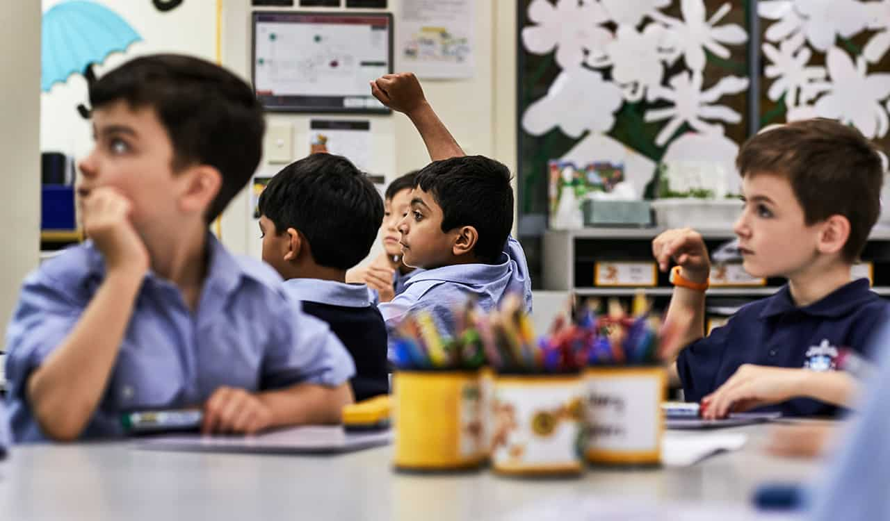

campus
School boarding facilities
boarding at kings
Boarding is the heart of The King’s School. Our boarders enjoy an unparalleled opportunity to live and learn on campus, develop their independence and resilience and form lifelong friendships. Boarding is very much a home away from home where the wonderfully supportive and highly qualified staff strive to make it a welcoming and safe space, and a rewarding learning adventure. Boys are encouraged to develop their individual talents and interests, taking full advantage of excellent facilities, inspiring surroundings and access to all the opportunities on offer. During their time at King’s, boarders will participate in an extensive range of learning programs, leadership experiences, sporting fixtures and excursions, developing their integrity, compassion, and a true sense of humility and place.
Tudor House
boarding at kings
The King’s School, Tudor House is the Southern Highlands campus of The King’s School, catering for 250 girls and boys from Pre-Kindergarten to Year 6. Standing proudly on a foundation of more than 120 years of outstanding Primary School education, our unique regional setting provides a holistic education focusing on care, curriculum and communication, nurturing children to become lifelong learners and global citizens. With superbly-resourced indoor and outdoor learning environments, our co-educational environment offers an education with a difference for the inquiring young learner, in a setting that both engages and inspires. In 2022 Tudor House celebrates 125 years of educational excellence. The Preparatory School IB Primary Years Programme
Prepetory School

Catering for boys from Pre-K to Year 6, The King’s School, Preparatory School is often said to be a boy’s heaven: an enriching and engaging environment nestled within 320 acres of native Australian bushland. Building on their natural curiosity and thirst for adventure, The King’s School, Preparatory School provides space for boys to discover, explore and grow.
Prepetory School

Nestled within 320 acres of established parkland in the demographic heart of Australia’s largest global city, Senior School provides the perfect setting for boys to explore and engage with their learning, develop skills and build strong community relationships. Boys are able to access everything they need for academic, physical, social and spiritual development, from airy, engaging classrooms, to welcoming boarding houses, high quality sporting facilities and plenty of wide-open spaces. The King’s School, Senior School is designed to inspire.